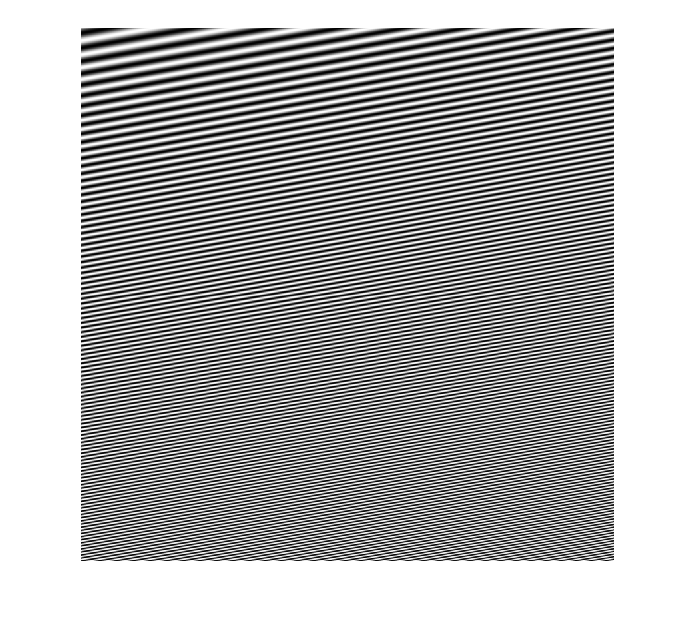
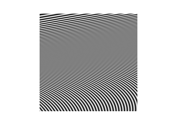
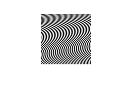
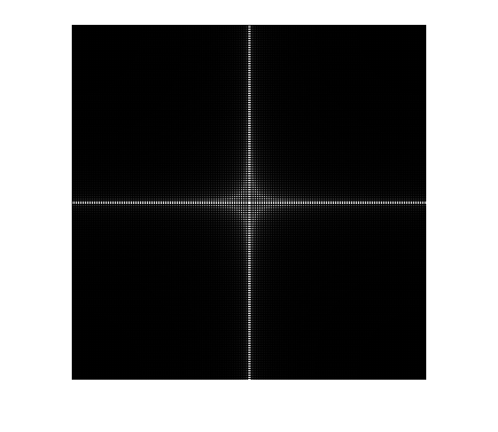
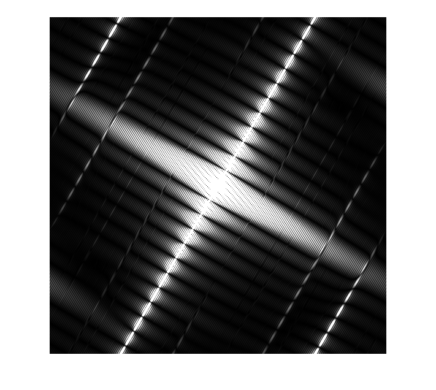
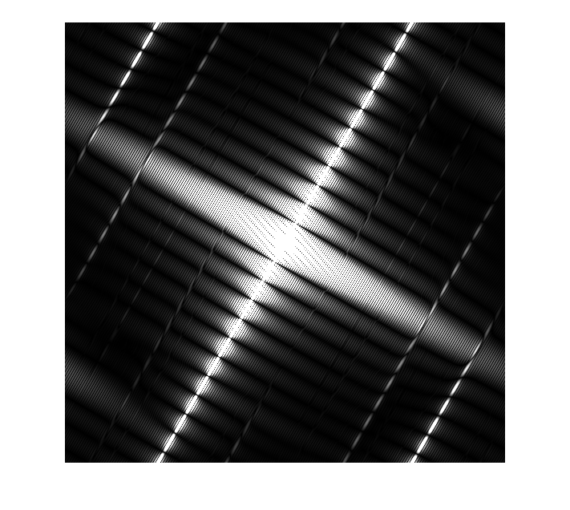

Contents
- Initialisierung:
- Stellen Sie das Bild 'Linien-10Grad-800.pgm' dar:
- Unterabtastung: Verkleinern Sie das Bild jeweils um den Faktor 2:
- Auflösung: 400x400 Bildpunkte:
- Auflösung: 200x200 Bildpunkte:
- Auflösung: 100x100 Bildpunkte:
- Speichern Sie die Bilder in Ergebnisse/ ab:
- Fourier-Transformation:
- Berechnen Sie die Betragsspektren der beiden Bilder:
- Stellen Sie die Betragsspektren dar, indem Sie die Spektren auf den
- Kommentieren Sie das Ergebnis:
- Speichern Sie die Rechtecke sowie deren Spektren in Ergebnisse/:
- Fourier-Transformation / Orientierung:
- Berechnen Sie das Betragsspektrum des rotierten Bildes:
- Stellen Sie die Betragsspektren des ursprünglichen und des rotierten
- Kommentieren Sie das Ergebnis:
- Speichern Sie das rotierte Rechteck sowie dessen Spektrum in Ergebnisse/:
% % 2. Praktikum - Unterabtastung + Spektrum % ---------------------------------------- % Legen Sie in Ihrem Arbeitsverzeichnis ein Unterverzeichnis an: % 2.Unterabtastung+Spektrum % % Kopieren Sie das Notebook aus ../allg dorthin und benennen Sie es um in % 2.Unterabtastung+Spektrum_Gruppe-XY.m % Legen Sie dort ein Unterverzeichnis 'Ergebnisse/' an. % % F�hren Sie die Arbeitsschritte aus, an denen ??? als Platzhalter steht % und speichern Sie das Notebook am Ende ab (zwischendurch auch % Sicherungskopien). % % Die Aufgabenstellung sowie Hinweise finden Sie im % 2.DBV-Ex_Unterabtastung+Spektrum.pdf % ------------------------------------------------------------------------
Initialisierung:
coder = 'Cinepak'; %'None', 'Cinepak', 'Indeo3' addpath('../Packages_Matlab'); addpath('../allg/'); addpath('../allg/Bilder'); %--------------------------------------------------------------------------
Stellen Sie das Bild 'Linien-10Grad-800.pgm' dar:
bild = imread('Linien-10Grad-800.pgm'); figure, imshow(bild); %--------------------------------------------------------------------------
Warning: Image is too big to fit on screen; displaying at 67%
Unterabtastung: Verkleinern Sie das Bild jeweils um den Faktor 2:
Greifen Sie dazu jede 2te Zeile und Spalte heraus, um die folgenden Auflösungen zu erhalten. Stellen Sie die Bilder jeweils dar:
Auflösung: 400x400 Bildpunkte:
p1 = bild(1:2:end,1:2:end); figure, imshow(p1);

Auflösung: 200x200 Bildpunkte:
p2 = p1(1:2:end,1:2:end); figure, imshow(p2);
Auflösung: 100x100 Bildpunkte:
p3 = p2(1:2:end,1:2:end); figure, imshow(p3); % Kommentieren Sie die Ergebnisse: % A: Ein Moiré-Effekt (falsche/zusätzliche Strukturen im Bild) ist auf % allen Bildern zu erkennen. Bei den verkleinerten Bildern breiten sich % diese fehlerhaften Bereiche auch in die oberen Bildbereiche mit % niedrigeren Ortsfrequenzen aus. Dieser Effekt ist auf die Unterabtastung % (Under-Sampling) zurückzuführen.
Speichern Sie die Bilder in Ergebnisse/ ab:
imwrite(p1, 'Ergebnisse/Linien-unterabtastung-10Grad-400.pgm'); imwrite(p2, 'Ergebnisse/Linien-unterabtastung-10Grad-200.pgm'); imwrite(p3, 'Ergebnisse/Linien-unterabtastung-10Grad-100.pgm'); %--------------------------------------------------------------------------
Fourier-Transformation:
Erzeugen Sie ein 400x400-Bild vom Typ 'single' mit einem weißen 200x200-Rechteck in der Mitte:
a = zeros(400,400); a(101:300,101:300) = 1; figure, imshow(a, 'InitialMagnification','fit'); % Erzeugen Sie ein 400x400-Bild vom Typ 'single' % mit einem weißen 20x200-Recheck in der Mitte: b = zeros(400,400); b(101:300, 191:210)=1; figure, imshow(b, 'InitialMagnification','fit');

Berechnen Sie die Betragsspektren der beiden Bilder:
fa = fftshift(fft2(a)); fb = fftshift(fft2(b));
Stellen Sie die Betragsspektren dar, indem Sie die Spektren auf den
Maximalwert normieren und ggf. etwas aufhellen:
afa = abs(fa); afa = afa / max(max(afa)) * 255; afb = abs(fb); afb = afb / max(max(afb)) * 255; figure, imshow(afa); figure, imshow(afb);

Kommentieren Sie das Ergebnis:
%A: Das Spektrum des ersten Bilds (Quadrat) entspricht der sinc-Funktion % sowohl in x- als auch in y-Richtung (2D sinc). Das Quadrat stellt eine % Fensterfunktion im Originalbereich dar. Im Spektrum ist deshalb die % Draufsicht der entsprechenden sinc-Funktionen zu erkennen. Die hellen % Bereichen stellen dabei die positiven Amplituden die dunklen Bereiche % dazwischen die negativen Amplituden dar. % Das Spektrum des zweiten Bilds (Balken) ist dem ersten sehr ähnlich. Auch % hier handelt es sich um sinc-Funktionen. Da in x-Richtung die % Fensterfunktion schmäler ist (höhere Frequenz) wird aufgrund der % Ähnlichkeit der Fouriertransformationen die sinc-Funktion im Spektrum % breiter.
Speichern Sie die Rechtecke sowie deren Spektren in Ergebnisse/:
imwrite(a, 'Ergebnisse/Quadrat-400.pgm'); imwrite(b, 'Ergebnisse/Rechteck-400.pgm'); imwrite(afa, 'Ergebnisse/Quadrat-Spektrum-400.pgm'); imwrite(afb, 'Ergebnisse/Rechteck-Spektrum-400.pgm'); %--------------------------------------------------------------------------
Fourier-Transformation / Orientierung:
Rotieren Sie das schmale Rechteck um 60 Grad:
brot = imrotate(b,60,'bilinear');
figure, imshow(brot);

Berechnen Sie das Betragsspektrum des rotierten Bildes:
fbrot = fftshift(fft2(brot)); afbrot = abs(fbrot); afbrot = afbrot / max(max(afbrot)) * 255;
Stellen Sie die Betragsspektren des ursprünglichen und des rotierten
Bildes dar, indem Sie die Spektren auf den Maximalwert normieren und ggf. etwas aufhellen:
figure, imshow(afb); figure, imshow(afbrot);
 
 Kommentieren Sie das Ergebnis:
%A: Die Drehung im Ortsbereich wirkt sich direkt auf das Spektrum aus. % Dieses wird ebenfalls um den Winkel von 60° rotiert.
Speichern Sie das rotierte Rechteck sowie dessen Spektrum in Ergebnisse/:
imwrite(brot, 'Ergebnisse/Rechteck-rotiert-400.pgm'); imwrite(afbrot, 'Ergebnisse/Rechteck-rotiert-Spektrum-400.pgm');
'fertig'
ans = fertig